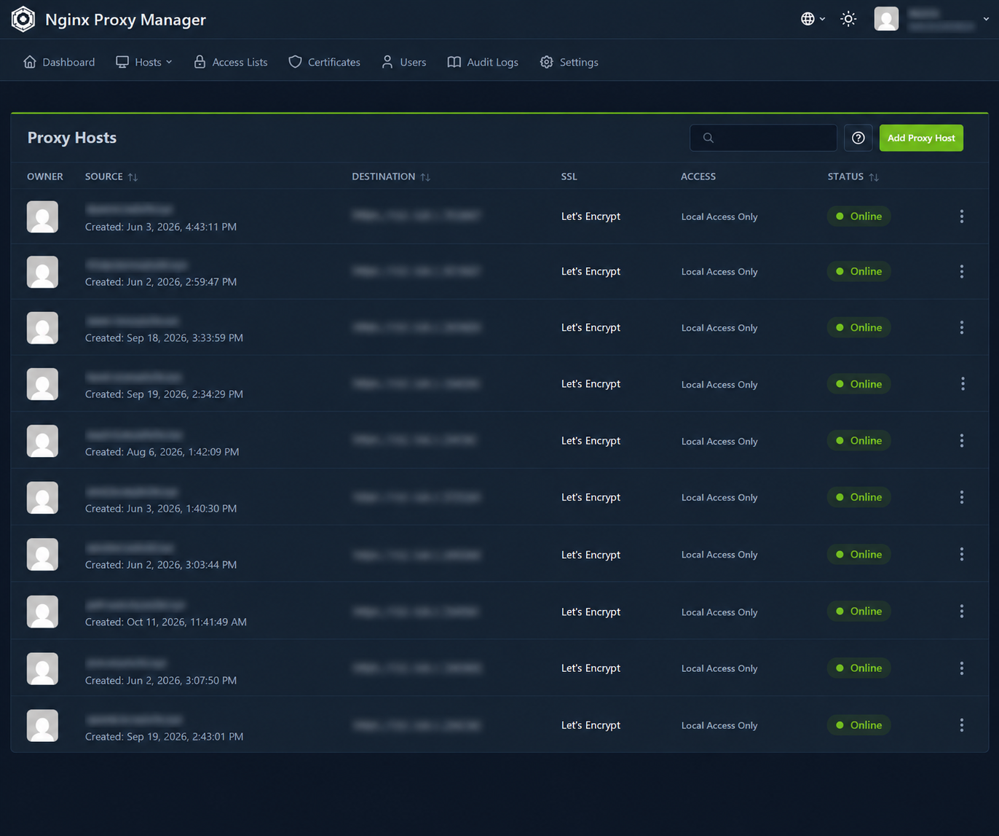

Mon Homelab
Proxmox.
Un environnement que j'ai monté de A à Z pour expérimenter la virtualisation, l’administration système et la sécurité réseau par la pratique.
Consulter mon profil LinkedInArchitecture logique.
Ma démarche pour isoler le réseau privé et sécuriser l'exposition de certains services sur internet.

Les services que j'héberge.
J'ai fait le choix de virtualiser chaque outil dans des conteneurs LXC indépendants afin de compartimenter les pannes et d'optimiser les ressources de mon serveur.
Pelican Panel & Wings
Je gère ma propre infrastructure de serveurs de jeux (Minecraft, Satisfactory) pour mes amis. Ce service est volontairement isolé du reste de mon réseau domestique pour des raisons de sécurité.
Proxmox Backup Server
Ma solution de sauvegarde. Je l'ai configurée pour effectuer des sauvegardes incrémentales et dédupliquées de mes machines virtuelles.
Immich & Utilitaires
Hébergement d'une alternative à Google Photos, d'outils de suivi réseau (Speedtest) et d'un gestionnaire de fichiers distant sécurisé.

Mes mesures de sécurité.
Gérer un serveur connecté à internet implique des risques. Voici les règles que je m'impose.
- Réseau Zero-Trust (Tailscale) Je n'ouvre aucun port d'administration (SSH, Proxmox) sur ma box internet. Tout accès distant nécessite une connexion à mon tunnel VPN WireGuard.
- Prévention d'intrusions (Fail2ban) J'ai configuré Fail2ban pour bannir automatiquement les adresses IP qui tenteraient de forcer l'accès (brute-force) à mes services exposés.
- MFA & Gestion des accès J'impose une double authentification (TOTP) sur tous mes panneaux de contrôle et l'accès Root par mot de passe est désactivé au profit de clés SSH privées.
Supervision du matériel.
J'utilise l'API de Proxmox couplée à Beszel pour monitorer la santé de ma machine au quotidien (CPU, RAM, état des disques, températures).

Évolutions prévues.
Mon infrastructure est mon terrain de jeu. Voici ce que je compte y intégrer prochainement :
Filtrage DNS & Sécurité
Mon prochain défi est de configurer un Raspberry Pi avec Pi-hole pour intercepter et bloquer le trafic publicitaire et la télémétrie sur l'ensemble de mon réseau domestique.
Serveur Relais (VPS)
Je souhaite acquérir un VPS distant qui fera office de bouclier, afin de masquer définitivement mon adresse IP résidentielle lorsque j'expose un service.
NAS Personnel
Je compte installer TrueNAS et configurer une grappe RAID de 2 disques (4 To) pour mieux comprendre la redondance matérielle et sécuriser les données familiales.
Mise à niveau matérielle
J'ai prévu de doubler la mémoire vive de mon serveur (passage à 64 Go) et d'ajouter des disques NVMe pour supporter la charge de mes futurs conteneurs.
Infrastructure IA
Je m'intéresse de plus en plus à l'hébergement local de modèles de langage (LLM). Je souhaite dédier une partie de mes ressources pour expérimenter avec Ollama.
Ma méthodologie face aux pannes.
Maintenir ce laboratoire m'a surtout appris à adopter une vraie rigueur de diagnostic réseau. Face à une panne, j'ai appris à ne pas agir au hasard : j'identifie le symptôme en consultant les logs système, j'isole la couche réseau défaillante (Pare-feu, Reverse Proxy, Hyperviseur), puis je teste une solution.
Un cas pratique : J'ai récemment dû diagnostiquer des Kernel Panics répétés sur mes serveurs de jeu. L'analyse des erreurs m'a permis d'identifier un conflit de version Java (v25 vs v21 LTS). En modifiant l'environnement d'exécution de mon conteneur, j'ai pu stabiliser définitivement le service.